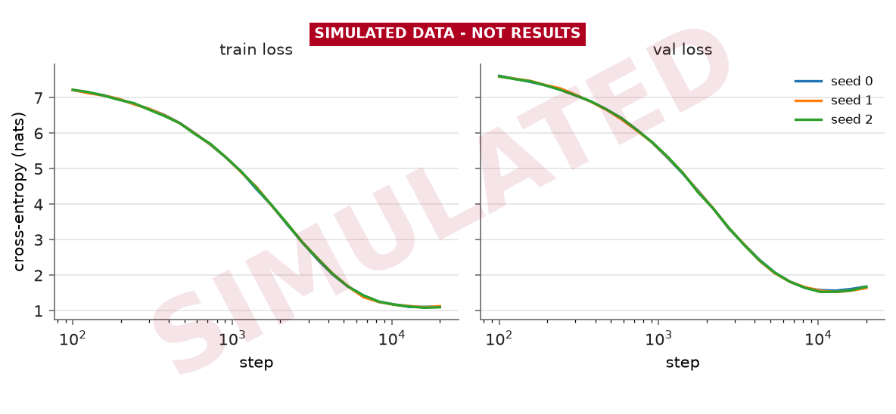
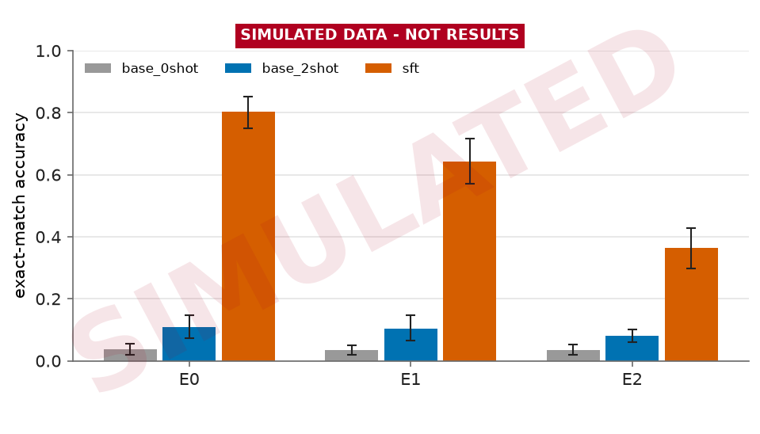
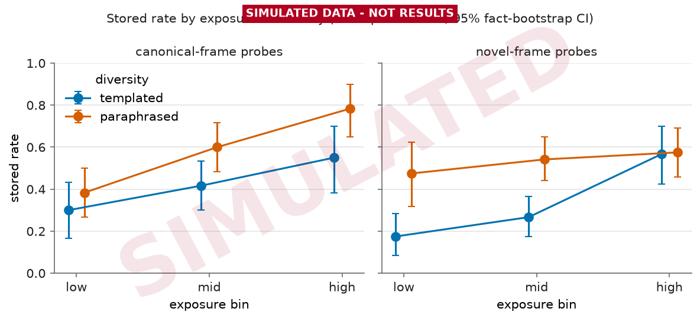
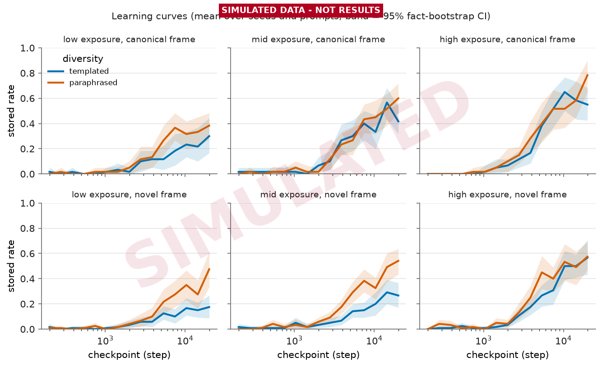

| SIMULATED DATA - NOT RESULTS | ||||||||||||||||||||||||||||||||||||||||||||||||||||||||||||||||||||||||||||||||||||||||||||||||||||||||||||||||||||||||||||||||||||||||||||||||||||||||||||||||||||||||||||||||||||||||||||||||||||||||||||||||||||||
|---|---|---|---|---|---|---|---|---|---|---|---|---|---|---|---|---|---|---|---|---|---|---|---|---|---|---|---|---|---|---|---|---|---|---|---|---|---|---|---|---|---|---|---|---|---|---|---|---|---|---|---|---|---|---|---|---|---|---|---|---|---|---|---|---|---|---|---|---|---|---|---|---|---|---|---|---|---|---|---|---|---|---|---|---|---|---|---|---|---|---|---|---|---|---|---|---|---|---|---|---|---|---|---|---|---|---|---|---|---|---|---|---|---|---|---|---|---|---|---|---|---|---|---|---|---|---|---|---|---|---|---|---|---|---|---|---|---|---|---|---|---|---|---|---|---|---|---|---|---|---|---|---|---|---|---|---|---|---|---|---|---|---|---|---|---|---|---|---|---|---|---|---|---|---|---|---|---|---|---|---|---|---|---|---|---|---|---|---|---|---|---|---|---|---|---|---|---|---|---|---|---|---|---|---|---|---|---|---|---|---|---|---|---|---|
What a small language model stores: exposure frequency and paraphrase diversityCourse project report. Companion Animal Travel Desk knowledge base, decoder-only Transformer, pre-registered study. SIMULATED DATA - NOT RESULTS. Every number, table and figure in this document was generated from simulated inputs to test the report pipeline. None of it is a result of the study. DatasetWe built a fictional organisation with one narrow department, the pet-travel desk of an airship line, and a knowledge base of 120 measured facts about it. Each fact is an (entity, attribute, value) triple whose value string is globally unique, so exposure can be counted by string match and contradictions can be detected. The facts are assigned to 6 design cells, three exposure bins crossed with two diversity conditions, with 20 facts per cell. In the templated condition the canonical fact sentence is used verbatim; in the paraphrased condition each mention is worded differently. A generator model wrote 2,407 training documents of 11 document types (1,000,000 tokens in total), and validation and test sets of 120 and 120 documents. Templated fact sentences are 3.2% of corpus tokens, so the corpus as a whole is diverse and the templated condition is a small, deliberate contrast group. Exposure is measured as the string-match count of each value in the training documents. Research questionHow do exposure frequency and paraphrase diversity during pretraining determine whether a small Transformer stores a fact, and does supervised fine-tuning make stored facts retrievable as answers to questions about facts it never saw in fine-tuning? A fact counts as stored only if its value ranks first among the same-attribute values and its binding score, the log-probability of the value given the right entity minus its mean given the other entities, is above zero. The binding score removes the frequency prior: a common value cannot count as recalled just because the model emits it for every entity. We pre-registered four hypotheses. H1: storage rises with log exposure. H2: at matched exposure, paraphrased facts generalise better to novel-frame probes and templated facts do better only on canonical-frame probes, tested as the diversity by frame interaction. H3: held-out question accuracy after fine-tuning (E2) exceeds the base model but is bounded by pre-fine-tuning storage. H4: the extraction gain is larger for paraphrased facts. H1 to H3 are confirmatory with a Holm correction; H4 is secondary and reported as an effect with its interval only, because its power at this sample size is low. ArchitectureThe model is a decoder-only Transformer with 6 layers, model width 384, 6 attention heads, a context of 512 tokens and a byte-pair vocabulary of 8,192 tokens, giving 12,000,000 parameters. It is trained from random initialisation with next-token cross-entropy and runs on a CPU for the released checkpoints. Training procedurePretraining uses 3 seeds on the same corpus. The number of epochs, 4, was chosen on validation loss in a sweep of 6 configurations, with a learning rate of 0.0006. The final checkpoint of each seed is the single checkpoint that is analysed; it is also the starting point of fine-tuning and the source of each fact's pre-fine-tuning storage status. Fine-tuning on question-answer pairs runs for 3 epochs at a learning rate of 0.0001 with the loss on answer tokens only. At the final step the training loss is 1.11 and the validation loss 1.67, a validation perplexity of 5.3.  EvaluationStorage is probed with cloze prompts in two frames, the canonical sentence prefix and a novel wording, using test templates only; validation templates are used for model selection and never for results. Extraction is measured on three question sets: E0 (fine-tuning facts, training phrasings), E1 (fine-tuning facts, unseen phrasings) and E2 (held-out facts never seen in fine-tuning), for the base model with zero and two examples and for the fine-tuned model. H1 and H2 use a logistic model for stored with fact clusters (a GEE, because three seeds cannot support a random-effect variance), with exposure, diversity, frame, their interactions, covariates and template terms. H3 and H4 use fact-level outcomes on E2: a fact is stored, or correct, when that holds for at least two of its three probes or phrasings and in a majority of seeds. H3 combines an exact McNemar test (base against fine-tuned) with a Fisher exact test (stored against correct); H4 is a permutation test on the per-fact gain. Sensitivity analyses vary the aggregation rule, the exposure coding, the template terms, the estimator, the outcome definition and the diversity measure.  FindingsThe analysed checkpoint is step 20,000, with 120 facts and 3 seeds. Overall the stored rate across design cells is 0.47.
Table 1. Hypotheses H1-H4. H1-H3 are confirmatory (Holm adjusted); H4 is secondary (effect and CI only). Estimates are log-odds (H1, H2) or risk differences (H3, H4).
For H2 the effect of diversity within each frame, paraphrased minus templated at mid exposure, is 0.78 log-odds on canonical probes (95% CI 0.26 to 1.30) and 0.97 on novel probes (95% CI 0.48 to 1.47). On the risk-difference scale, high against low exposure changes the stored rate by 0.29 (95% CI 0.17 to 0.40).   On E2 the fine-tuned model reaches 0.36 exact-match accuracy against 0.08 for the two-shot base model and 0.04 for the zero-shot base; on the fine-tuning facts it reaches 0.80 (E0) and 0.64 (E1). Among the 60 held-out facts, the difference in correctness between stored and not-stored facts is 0.62 (95% CI 0.43 to 0.81). Table 2. E2 held-out facts by diversity condition: base (2-shot) and SFT fact-level accuracy, gain and the exact McNemar test.
Replacing the nominal diversity label by the realized diversity of the generated mentions changes the H2 estimate from 0.19 to 0.49 log-odds per nominal contrast. A manipulation that only partly separates the conditions biases the nominal estimate toward zero, so the nominal H2 is a lower bound on the effect of realized diversity. The full set of sensitivity analyses follows; none of them is part of the confirmatory family. Table 3. Pre-registered sensitivity analyses (none is part of the Holm family).
Generated samplesThe gallery contains 4 successes and 4 failures, grouped by the failure categories wrong fact, entity confusion, repetition loop and format drift. Table 4. Generated-text samples: successes and failures.
LimitationsThe corpus comes from a single generator model and is synthetic, the study is small, and exposure is a string-match count, so a value stated in an unusual way is missed. Templated and paraphrased facts differ in sentence-context variety as well as in wording; we state this rather than hide it. Fact-level outcomes discard item-level information to keep facts independent, and the McNemar and Fisher tests are conservative at this size. E2 has 60 facts, so H4 is secondary and every H3 and H4 interval is wide. The analysis was fixed in a pre-registration before any result was seen; the pre-registration commit is TBD (simulated) and the analysis code commit is TBD (simulated). |